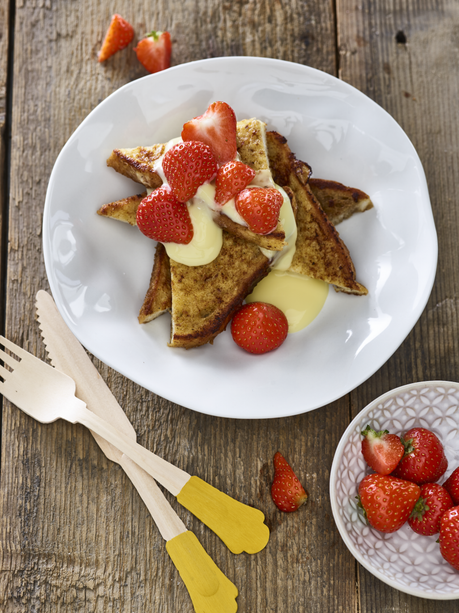

Wentelteefjes met aardbeien en vanillevla

Omschrijving
De ideale manier om het oude brood op te maken. Wentelteefjes. Afgetopt met vers fruit en een lekkere scheut vanillevla. Nee, dit is niet mijn meest gezonde
recept maar ik laat je zien hoe je ook dit soort gerechten in een (voornamelijk) gezond dagmenu kunt verwerken.
Ingrediënten (twee personen)
- 4 (witte) boterhammen
- 1 ei
- 150 ml melk
- 1 zakje vanillesuiker (8 gr)
- 1 theelepel kaneel
- 150 gr aardbeien
- 150 gr vanillevla
- 30 gr roomboter
Instructies
- Neem een diep bord of een ovenschaal en meng daarin de melk, het ei, de kaneel en de vanillesuiker tot een beslag.
- Verhit een kwart van de boter in een koekenpan.
- Leg elke boterham ongeveer 10 seconden per kant in het beslag. Doe dit pas als de boterham direct daarna de pan in kan.
- Bak de wentelteefjes op middelmatig tot hoog vuur in ongeveer 3 minuten per kant mooi goudbruin.
- Maak ondertussen de aardbeien schoon en snijd ze in stukken.
- Leg per persoon twee wentelteefjes op een bord, verdeel de aardbeien erover en schenk de vanille eroverheen.